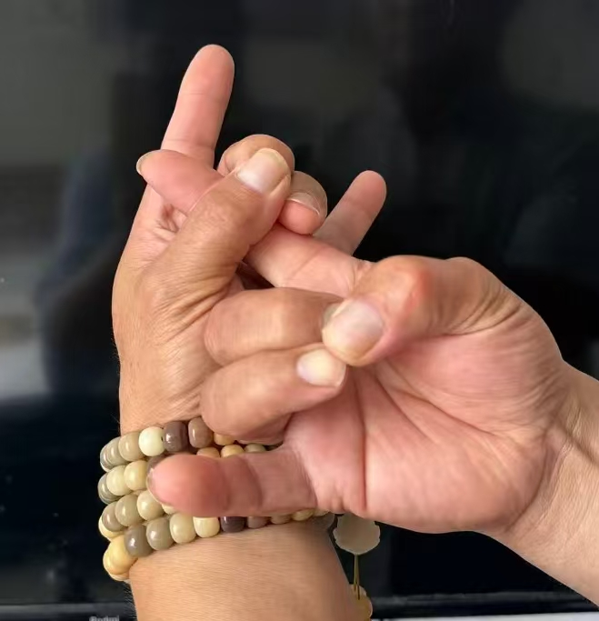
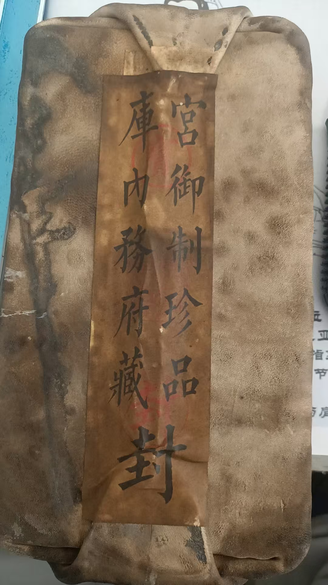
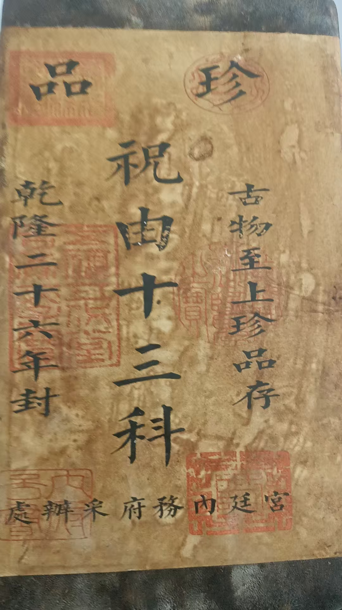
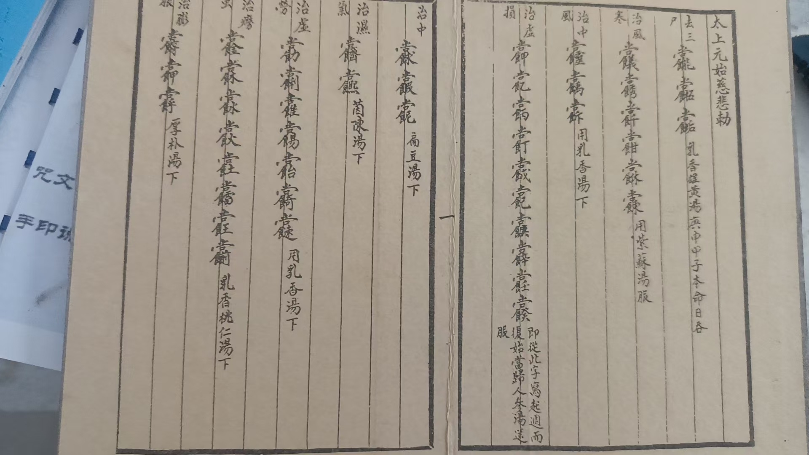

20260524以后就这形象，跟学生合影
原始对话记录
以后就这形象，跟学生合影
普陀山买的珠子




儿子发来消息，换单位了，工作轻松，涨了工资，带奖金加绩效
双休日自己给别单位做视频
那也得上万了
捷报频传，
我不喝酒谁喝酒!
以下为编者整理的主题文章
编者整理 · 主题文章
以后就这形象
导读：一句以后就这形象，跟学生合影，配着一串普陀山买回来的珠子。照片之外还有一件小事：儿子换了单位，工资涨了。这一页很短，编者只把它照样子排开。
以后就这形象，跟学生合影。
就这一句。
手上一串珠子，普陀山买的。是照片里那串。照片里站着几个人，穿什么我记不清了，反正就是这一身。往后合影，大概都是这样。
这个圈子里，合影是常事。《杭州周易大会》那一页里，各门各派传承人到场，说好了到时候合个影。
合影挂在办公室里，挂在屋里。我以前也挂，装修房子的时候全拿下来了，摆在地上。证书都在大橱里，谁也不翻。
学生来来去去。来的带一串珠子，走的带走一张照片。合影这件事，我从不多想。
照片上的人，我大多叫不上名字了。有的来过一次，有的年年都来。按下快门，各人站定。珠子是普陀山买的，就那一串。
这些年，学生多了。合影也多了。照片洗出来，放进相册。过些年再翻，人是哪一年，得看衣服。
同一天，儿子发来消息。换单位了，工作轻松，涨了工资，带奖金加绩效。双休日还给别的单位做视频，那也得上万了。
捷报频传。我不喝酒谁喝酒！
就这些。
说明与免责：本站为民间修炼、民俗文化与传统文化资料的整理与记录，内容源自传承者口传与个人修习体会，仅供文化交流与研究参考，不构成医疗、健康、投资或任何功效承诺。所述内容属传统术数范畴，请理性看待；如身体不适，请及时就医。请遵守法律法规与公序良俗。